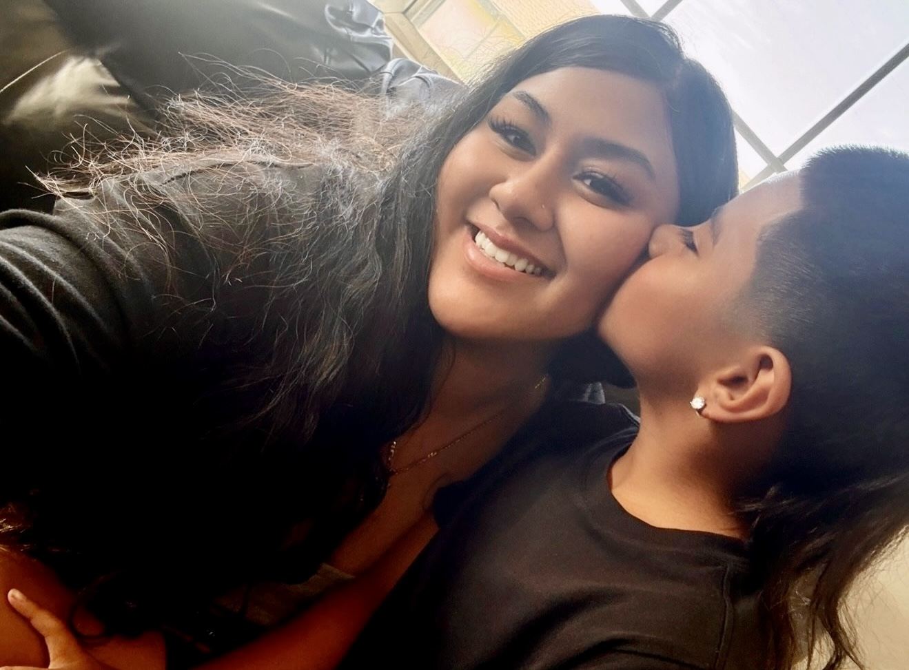
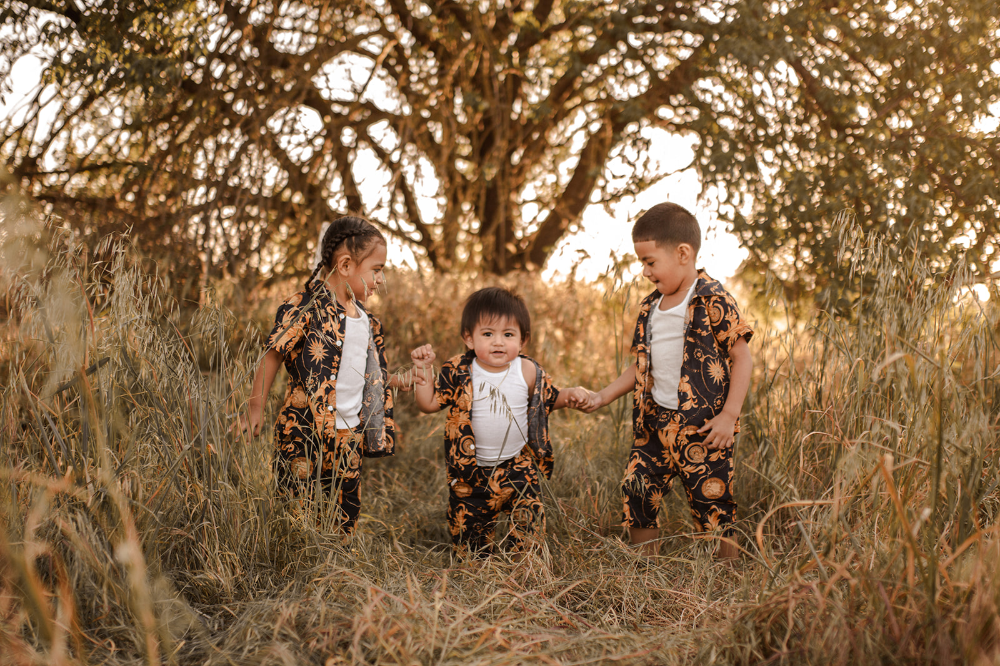
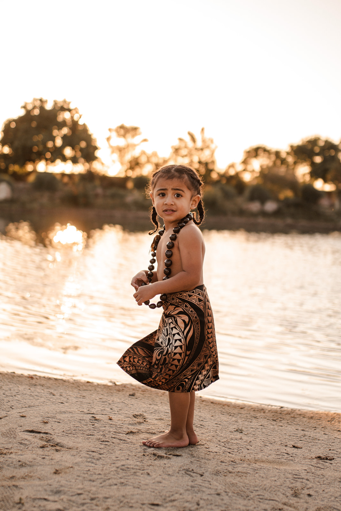

Hi! My name is Kiren Nand
Skills
IoT skills
HTML
Data Entry
GitHub
Fix minor technical issues
POS systems
CSS
Bootstrap
HTML
Data Entry
GitHub
Fix minor technical issues
POS systems
CSS
Bootstrap
Customer service
Punctual
Bilingual (English & Hindi)
Flexible
Ability to work under pressure
Organized
Cash handling
Problem Solving
Adaptability
Attention to detail
Conflict resolution
Reliable
Strong work ethic
Punctual
Bilingual (English & Hindi)
Flexible
Ability to work under pressure
Organized
Cash handling
Problem Solving
Adaptability
Attention to detail
Conflict resolution
Reliable
Strong work ethic
Personal




I was born and raised in the Bay Area, specifically Pittsburg & San Francisco. My ethnic background is Samoan and Indo-Fijian. I'm also a proud mother to 5 amazing children who are the center of my universe. I love spending time with my family, exploring new recipes, baking, and experiencing new places. I enjoy learning about self-improvement and finding balance between personal and professional growth.